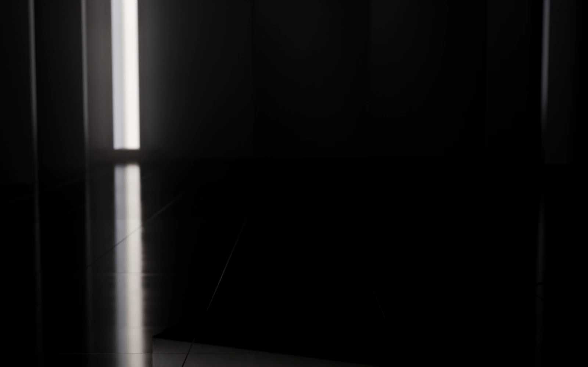
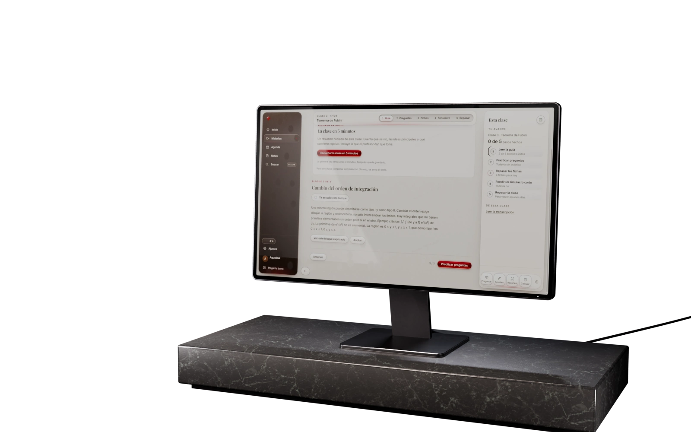
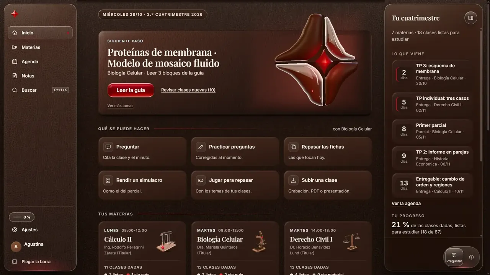
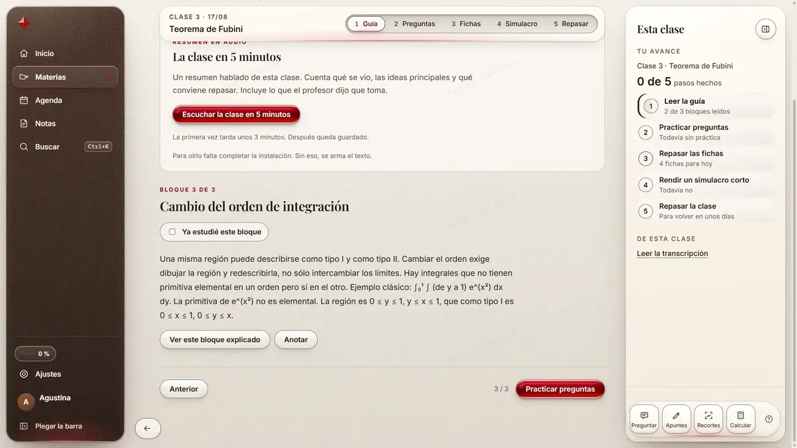
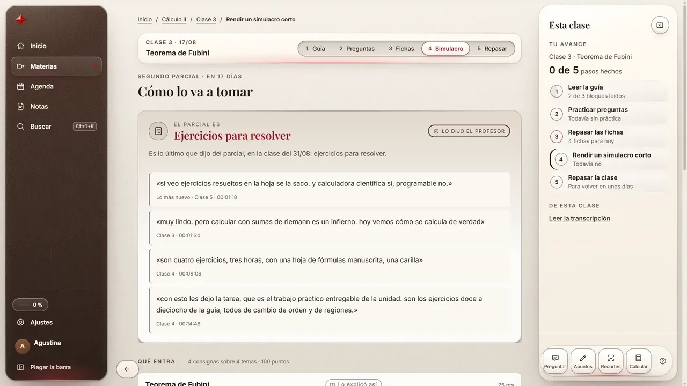
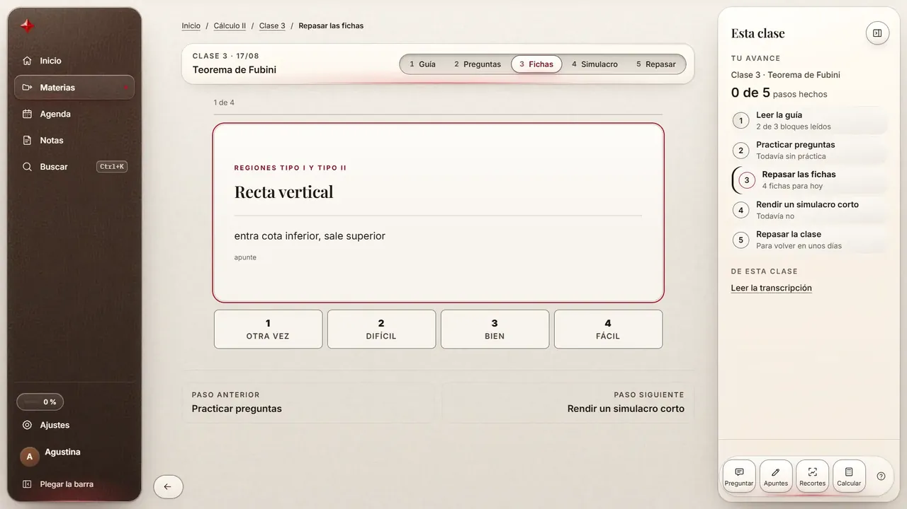
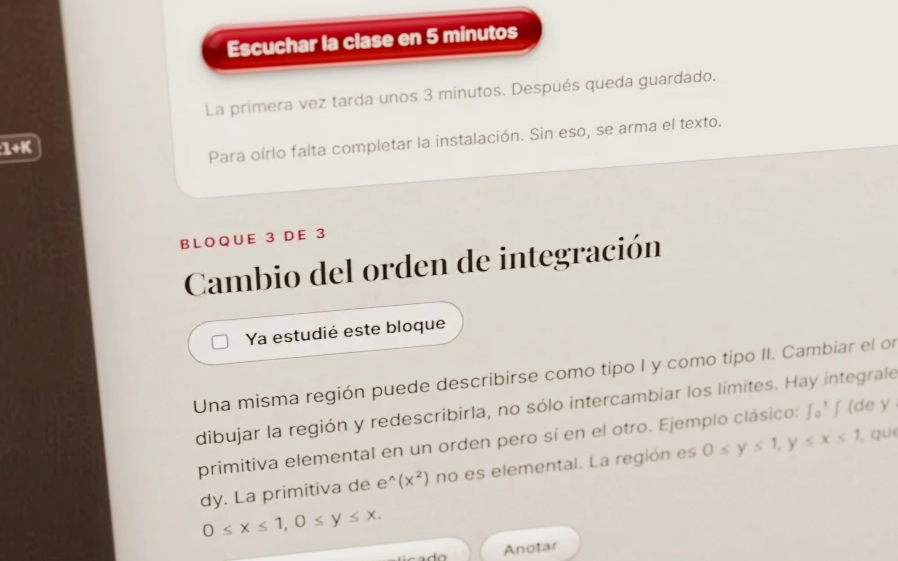
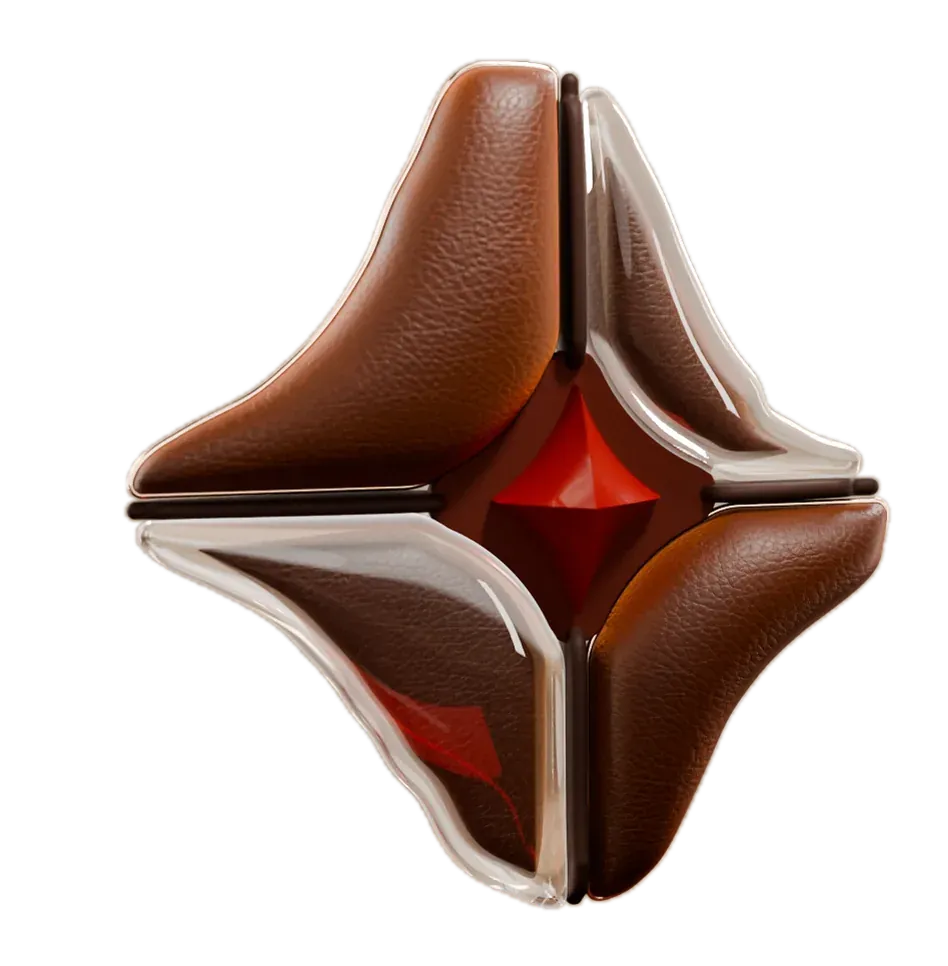
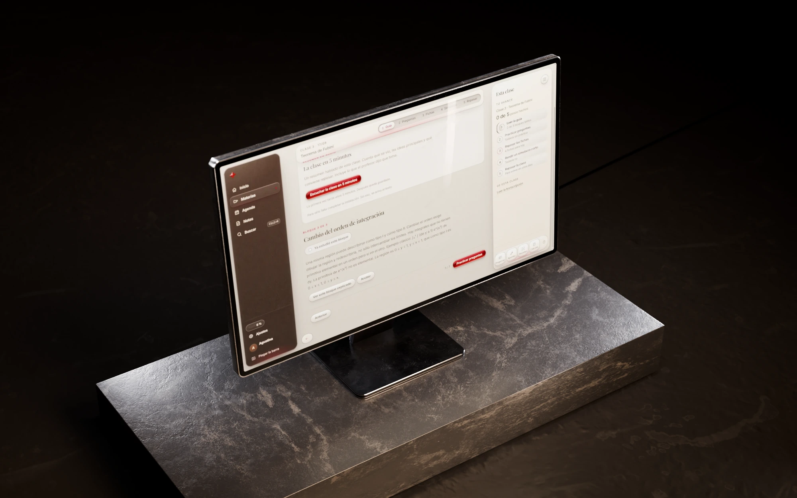
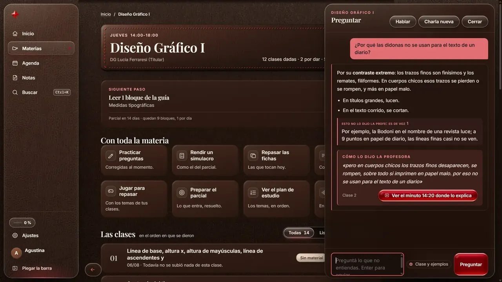

Caso de estudio
Producto propio · en beta
Cathedra
De horas de clase grabada a un plan de estudio donde cada respuesta cita clase y minuto.
- Qué es
- App de estudio para Windows: transcribe tus clases y arma con ellas la guía, el simulacro y las fichas.
- Para quién
- Estudiantes universitarios con clases grabadas y material de cátedra.
- Estado
- Beta 1.2.0, con instalador para Windows 10 y 11 y página pública.
- Mi rol
- Fundador y product builder
- Período
- Desde agosto de 2026, en desarrollo activo
- Herramientas
- Desarrollo asistido por IA · Python · HTML, CSS y JavaScript · transcripción local · recuperación por embeddings
El problema
Una clase grabada puede durar cuatro horas, y la explicación que entra en el parcial está en algún minuto de ese audio.
Con varias materias así, más el material de cátedra, no se sabe qué entra en el examen ni dónde se explicó cada tema. Volver a ver todo no escala, y un asistente genérico contesta con la misma seguridad cuando el dato no está en el material.
Recorrido
Todo sale de las clases que subís: el plan, la guía, el simulacro y el repaso.
Capturas con datos de demostración: materias, docentes y alumna ficticios.
-

Un solo plan por materia, armado desde el cronograma
Subís el cronograma en PDF, Word o foto y arma materias, clases, fechas y parciales. Lo que el cronograma no dice queda marcado, sin inventar. El inicio muestra el siguiente paso y cuántos días faltan para cada entrega.
-

Cada clase se convierte en una guía que se lee por bloques
La grabación se transcribe en la computadora, también sin conexión, y se convierte en una guía por clase y por tema. Cada bloque guarda la frase y el minuto de origen. Arriba, la clase resumida en cinco minutos de audio.
-

El simulacro sale de lo que el profesor dijo que toma
La app separa lo que se dijo sobre el parcial del contenido de la clase y lo junta en «Cómo lo va a tomar», cada frase con su clase y su minuto. El simulacro respeta ese formato y la corrección dice de dónde salió cada consigna.
-

Lo que te salió mal vuelve antes del examen
Errores, juegos y fichas van a un mazo de repaso. Cada ficha se califica de «otra vez» a «fácil», y «Cuánto por día» reparte lo pendiente hasta la fecha de cada examen.
También hace
- Transcribe clases largas Clases grabadas de hasta 4 horas, con control anti-alucinación; el texto alcanza para no volver a ver la clase.
- Ordena por materia Clasifica cada material en contenido, examen, práctico o cursada.
- Huecos contra el programa Compara lo visto con el programa oficial y muestra qué falta cubrir.
- Modo Feynman Explicar el tema con palabras propias para comprobar que se entendió.
- Con o sin conexión Motor en la nube o motor local de cuatro capas: lenguaje, reglas, recuperación por embeddings y matemática simbólica.
- Voz Lectura en voz alta y resúmenes en audio: la clase en 5 minutos.
- Herramientas de estudio Calculadora con graficador, escenas 3D de conceptos, juegos de memoria y recordatorios por Telegram.

Una respuesta, ampliada
Cada respuesta se puede rastrear hasta el minuto en que la profesora lo dijo.
¿Por qué las didonas no se usan para el texto de un diario?
Cómo lo dijo la profesora
«pero en cuerpos chicos los trazos finos desaparecen, se rompen, sobre todo si imprimen en papel malo. por eso no se usan para el texto de un diario»
La traducción al inglés aparece sólo en la versión en inglés de esta página.
La respuesta separa lo que explica la app, un ejemplo propio marcado como «esto no lo dijo la profe» y la frase textual de la profesora, con la clase y un botón al minuto 14:20 de la grabación. Si el dato no está en el material, el sello queda vacío y la app ofrece buscar afuera.
Decisiones
Lo que decidí para que cada respuesta se pueda rastrear.
-
Decidí
Que cada respuesta lleve clase, minuto y quién lo dijo, y que el sello quede vacío si el dato no está en el material.
Lo que viUn estudiante no distingue una explicación fluida de un invento.
DescartéResponder siempre con un texto fluido. Si no se puede rastrear hasta el profesor, no sirve para estudiar.
-
Decidí
Clasificar cada bloque en contenido, examen, práctico o cursada, y armar un solo plan por materia.
Lo que viEn una misma clase el profesor mezcla contenido con avisos del parcial y de la cursada.
DescartéUn plan por cada archivo subido. Con varios planes no se sabe cuál seguir; uno solo, alimentado por todo el material, sí.
-
Decidí
Transcribir y guardar en la computadora, con un motor local que funciona sin internet.
Lo que viLas clases son del alumno y no siempre hay buena conexión.
DescartéDepender sólo de un servicio en la nube. Estudiar no puede cortarse por falta de conexión.
Cómo lo construí
Dirigí agentes de IA por tandas, cada una con brief, criterio de aceptación y capturas obligatorias.
-
Brief y flujo.
Los seis pasos ordenan la app y su página (empezás, subís, la lee, preguntás, rendís, repasás), y una regla los gobierna: nada que no esté en el material.
- 01 Empezás
- 02 Subís
- 03 La lee
- 04 Preguntás
- 05 Rendís
- 06 Repasás
La traducción al inglés aparece sólo en la versión en inglés de esta página.
Los seis pasos con los que se ordenan la app y su página. -
Una tanda por vez.
Cada función fue una tanda con brief, criterio de aceptación y capturas obligatorias, y un solo agente responsable.
-
Revisión independiente.
Antes de llamar «final» a algo, otra revisión mira el frente y el fondo: textos, botones y contraste medido en el tema claro.
-
Verificación.
Capturas a resolución real, miradas una por una, y más de 5.500 pruebas automáticas.
-
Qué rehice.
La identidad, dos veces: la primera paleta (negro y celeste) salió y quedó cuero, marfil, cristal y cereza; el emblema se rehízo hasta que el material se leyera como real.

Emblema 3D: render propio, iterado hasta que el material se leyera como real.
Resultado
Beta 1.2.0 publicada, con instalador para Windows y página pública.
más de 5.500
pruebas automáticas
Transcribe clases de hasta cuatro horas en la computadora, también sin conexión.
Instalador completo y liviano para Windows 10 y 11, revisión de seguridad y textos legales antes de abrir la beta, y un panel de administración. Sin usuarios ni métricas que contar todavía.
Qué falta
- Usuarios: sin ellos no sé si un estudiante la adopta sin ayuda.
- «Grabar en vivo» figura como «pronto» y todavía no está.
Qué cambiaría
Fijar la identidad antes de construir pantallas; rehacerla dos veces costó tandas enteras.
Galería
El monitor visto desde arriba, y la pantalla de Preguntar entera.


Contacto
Escribime si tenés un producto para construir o un proceso para automatizar.
Respondo en el día.